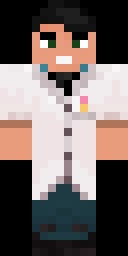
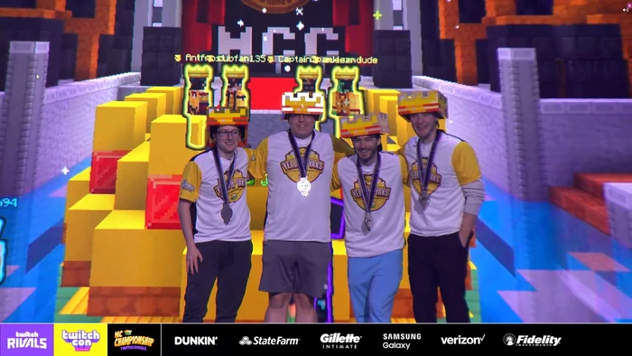

General Infomation
Preferred name: Cub
Nickname: Cubfan or Cub
IGN: cubfan135
Skin:

Photo:
Gender: Male
Pronouns: He/Him
Subs:
Main Channel: cubfan135 - 820k
Other Channel: Cub Two - 12k
Best known for: "Things you (possibly) didn't know
about Minecraft" Series, which has gathered over 36
million views over the six-part series.
How they joined
Cubfan135 joined Hermitcraft at the start of Season 4 with four other Youtubers from the Kingdomcraft server (GoodTimesWithScar, Iskall85, Rendog, and Welsknight) after they were recommended to the group by PythonGB. He released his first Hermitcraft episode, "Mesa'n Around" on February 25, 2016.
Seasons they were apart of
Cub was apart of season 4 to 9. Which his first episode was released February 25th 2016 to ongoing.
Outside of Hermitcraft?
Cub is a common participant in Minecraft Championships. Recently competing in
the first ever IRL Minecraft Championships held at Twitchcon LA, where he was on the
Yellow Yaks with fellow MCYT creators Awesamdude, Antfrost and CaptainSparklez.
This event was the ninth non-canon event of Minecraft Championships, this event ran
a bit differently as there was only 6 games instead of the usual 8 games.
Despite this Cubs team came first, with a 3-0 win in dodgebolt, against purple pandas
which had fellow MCYT creators, Purpled, Aimsey, Guqqie and Seapeekay.
